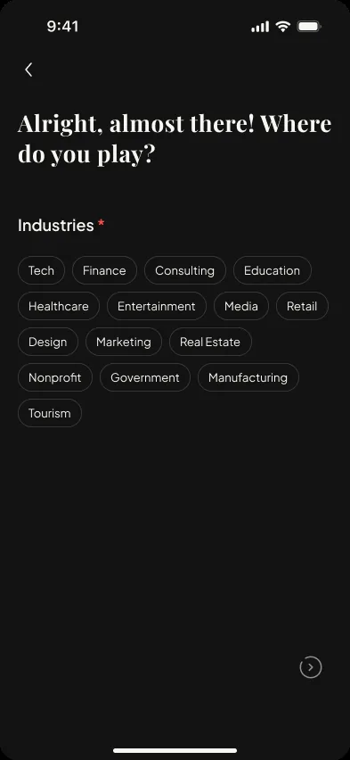
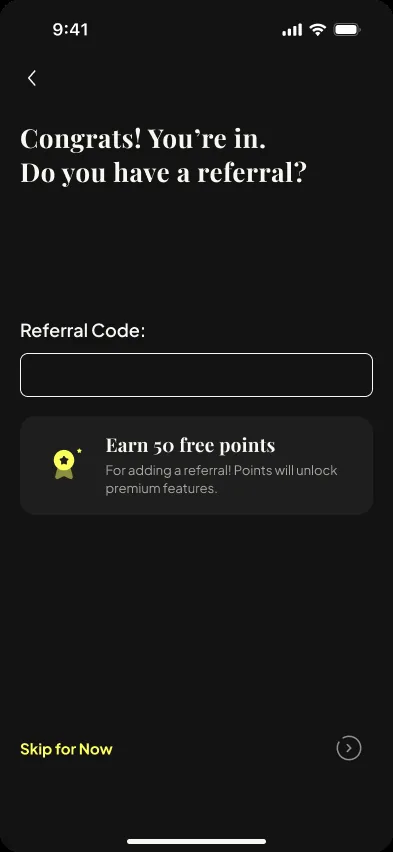
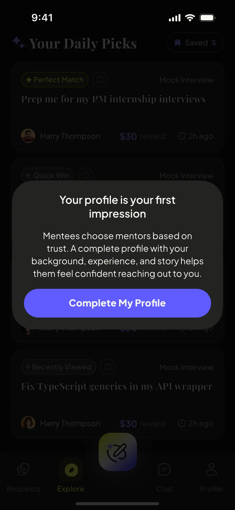
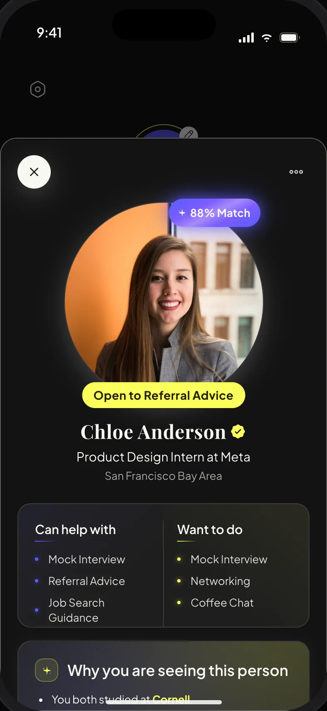
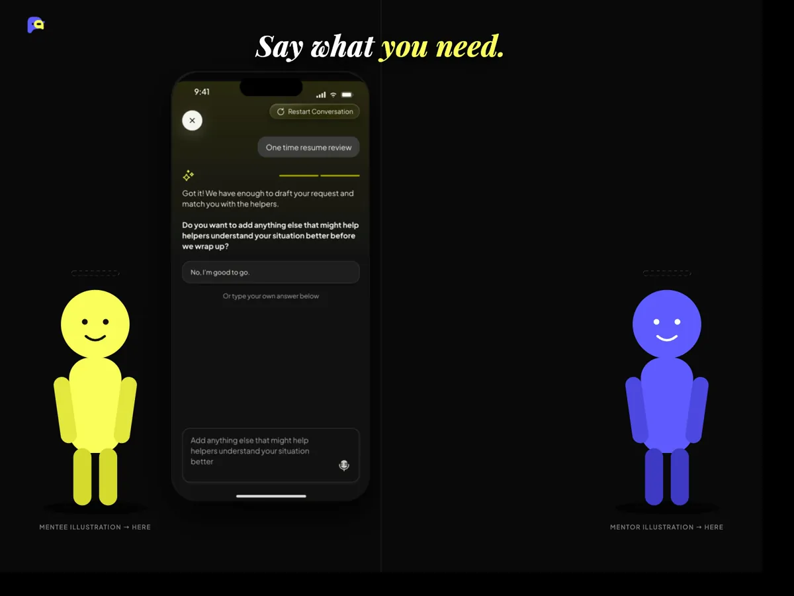
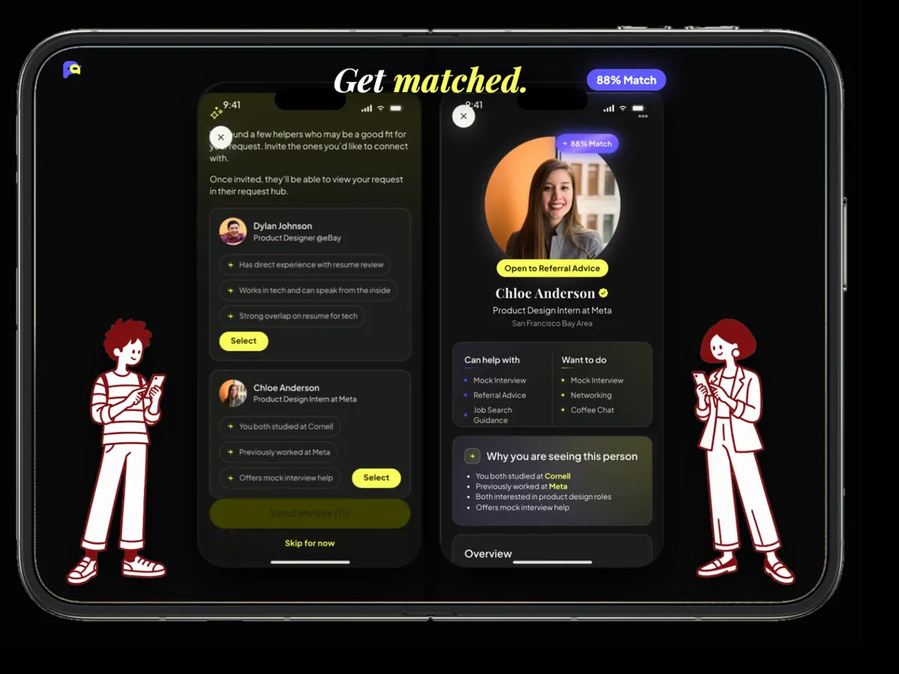
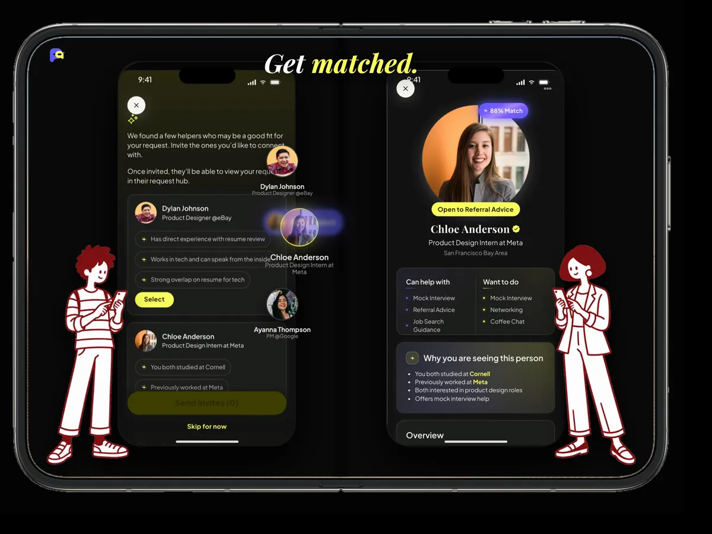
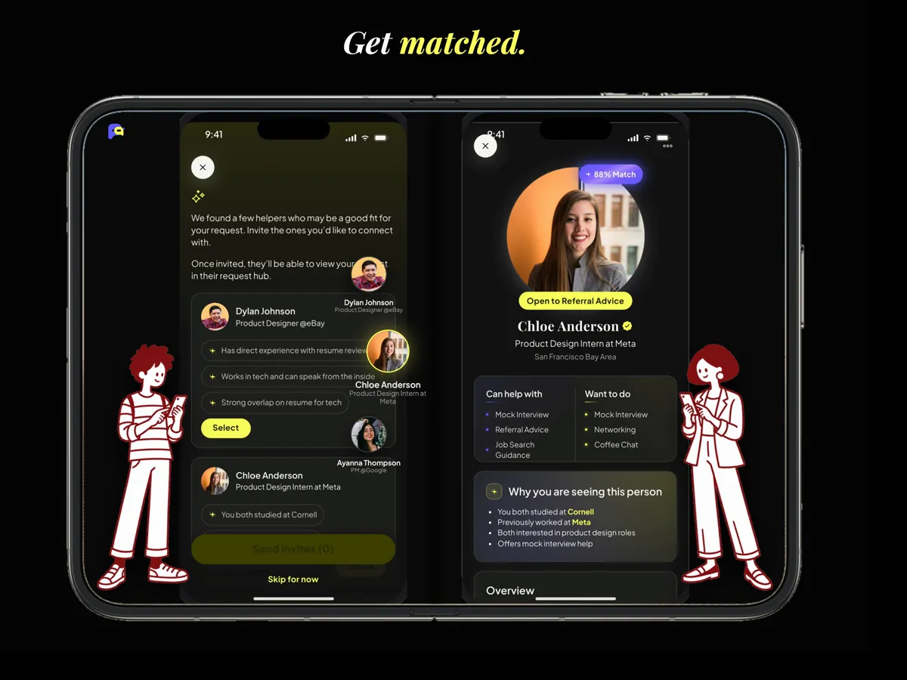
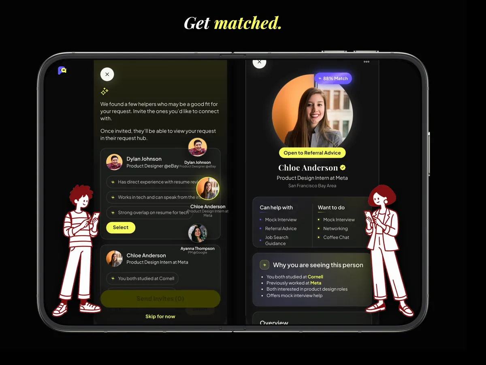

Role
Founding Product Designer
Own onboarding, Explore, profile, premium, and the mentor-side AI flow; brand, marketing, and AI production.
I joined Paira as one of its two product designers before the product found its shape. I own the surfaces that bring people in and let them help: onboarding, Explore, profile, premium, and the mentor-side AI flow. I also built the brand and the launch materials, and I am now producing the product's story with AI tooling.
Founding Product Designer
Own onboarding, Explore, profile, premium, and the mentor-side AI flow; brand, marketing, and AI production.
Aug 2025–Present
Concept, beta, pivot, App Store launch, and ongoing growth work.
Early-stage startup
Founders, product, engineering, growth and community, two designers.

Paira started with a broad ambition: make it easier for a student or new graduate to reach the one person who can actually help them, without the performance that networking usually requires. When I joined in August 2025, the team had a mission and a waitlist, not yet a shipped product. My first job was to make the idea legible: what the product was, who it was for, how it should look, and how it would talk to the people we needed to recruit.
People do not need more connections. They need the right person for one real need.

“Find the help. Be the help.”
From the beta user guide I designed, February 2026
Onboarding, the Explore surface, the profile, the premium and points system, the mentor-side AI flow, the brand identity, and all marketing and launch materials.
Live on the App Store since June 2026 after growing to 100+ waitlist users and 50+ beta testers. The product is ongoing, and so is my work on it.
The early Paira was a familiar shape: a People tab you swiped through, a Request tab with small bounty posts, and AI promised for later. We shipped that version to beta testers over TestFlight in early 2026. It worked as a demo and failed as a habit. Matching two profiles still asked people to invent a reason to talk.
The designers ran the test; the PM made the final call; we shaped the new features together. In spring 2026 the team rebuilt around the request.
You describe what you need in plain words, AI asks two or three clarifying questions and drafts the request, and Paira suggests helpers with the reason each one fits. Every conversation now starts with context both sides already understand. I did not make that call alone, and I did not redesign every screen. What I did was carry it into the surfaces I own, and the next section walks through each one.
A replay of the seeker flow the team shipped. Pick an answer to steer it, or let it run.
“Paira is not another profile feed or a swipe-for-its-own-sake social app. The AI never replaces the human. It routes each request to one.”
Paira’s App Store description, 2026
The pivot made intent visible. It lowered the social cost of asking, and it gave the AI something more useful than a profile to work with.
Paira’s request flow, chat, and meeting tools were shared work across the team. The five surfaces below are mine end to end, from the first Figma frame to the shipped screen, and each one had to be rethought when the product pivoted.
Paira’s core loop, shared across the team: a post lands in a helper’s Explore, a reply carries a reason, one helper is chosen and the others are told, and Paira AI writes the introduction. Every surface I own sits somewhere on this line.
Sign-up is deliberately short: phone, a six-digit code, an email, a name. Then the tone changes. A “Heyyy :)” splash, a photo and a one-line headline, and the screen that matters: So, what’s on your radar? You pick what you can do (mentor, mentee, peer, co-founder) and what you want to do (mock interview, networking, coffee chat, resume review). Industries, notifications, and a referral code with 50 free points close the loop.
Why. Intentions are the only profile data the matching actually needs on day one. Everything else is nudged later, in context, when it will improve a match. The goal is that a new user reaches a drafted request before they have written a bio.
What changed at the pivot. The same intention chips used to feed a swipe deck. Now they seed the AI’s first question and the helper’s tag list.





Explore is the helper’s front door. Each day it shows a handful of open requests matched to you, each carrying a badge that says why it is there. You can save a pick before it refreshes away, pull to refresh, and when the day’s picks run out the screen tells you when the next batch arrives. Tapping a pick opens the request; “I’m Interested” moves it into your Request Hub as something you are helping with.
The constraints are deliberate. A small daily set makes helping feel like a favor you can finish, not a queue you owe. Badges replace a match percentage with a reason, so the AI’s judgment stays legible. The first visit shows a two-step tutorial, because saving and refreshing are the only two gestures the surface asks you to learn.
What changed at the pivot. The old Request tab was a swipe deck of bounties. Explore is a list you read, save, and return to, and every card is something you can act on today.


The profile leads with two lists, “Can help with” and “Want to do,” an “Open to networking” state, and recommendations written by people you have actually worked with. Experience and education are there, but below the fold, and the editor breaks them into small steps so nobody stalls on a blank form. From the profile tab you also reach points, Request Boost, and settings, because this is where a person decides how much of themselves to put into the platform. The profile is never demanded up front: Explore nudges you to complete it at the moment it starts to matter, when mentees are deciding whether to trust you.
Why. After the pivot the profile is read mostly by someone deciding whether to accept your help, or by the AI deciding whether to suggest you. Both need to know what you can do, not where you went to school.




Paira’s premium layer runs on points. You earn them by inviting friends who complete a profile, and you spend them to boost a request for 24 hours, to ping someone without a match, or to see who has “Paira’d” you. Boost is the piece I care most about after the pivot: it is the one paid action that helps the request rather than the ego, so it fits the product’s promise. The purple sheet and the “Request Boosted!” moment are designed to feel like a small celebration, not a checkout.
Open question. Premium Ping and “See who Paira’d you” are inherited from the match era. I am watching whether they still make sense in a request-first product, or whether the paid layer should collapse onto Boost and request visibility.


The seeker’s AI flow gets most of the attention: it turns “I need help” into a request. The mentor side is the mirror I designed, and we wanted it fast. It opens on suggestion bubbles generated from your onboarding intentions and past preferences, sized by how likely they are to fit, so most helpers reach matches in two taps. “Tell Us More” is the slower path: a paragraph in your own words, which the AI reads and turns into dashed tags you can edit before it shows the mentees waiting for you.
The design problem was symmetry without sameness. A helper has less patience for a questionnaire than a seeker does, so the AI’s work is visible for a beat and then gets out of the way, and the outcome is a list of concrete things to do, not people to evaluate. At the end the flow asks one question, whether to save these answers to your profile, which is how the mentor flow feeds Explore.
Shared with the team and shown here as core functions, not as my ownership: the request status lifecycle, the seeker-side AI request flow, Request Hub, chat with Paira AI action plans, meeting scheduling, and the helper profile’s “Why you are seeing this person” card.
Each node records the question we faced, what we chose, what we gave up, and why. Nothing here was free.
Paira lives on near-black with two voices: an acid yellow for action and recognition, and a soft violet-blue for AI and the calmer moments. Headlines are Playfair Display in italic, body is Plus Jakarta Sans, which lets a screen feel editorial without feeling formal. The mark is two rounded shapes that overlap, one blue, one yellow: the person asking and the person helping. I drew the logo and the icon family, then built the loading animation so the same two shapes do the waiting. The component library is shared with the team; the identity is mine.
The two-part mark holds both sides of the exchange: asking and helping.
Color carries action and recognition while neutral surfaces keep dense content readable. Motion follows the same rule as the copy: short, legible, and pointed at the next thing.
From the waitlist in late 2025 to the App Store launch in June 2026 and the summer speaker series, I designed every public-facing piece: recruitment posters, a bilingual beta guide, the beta install site, App Store artwork, launch teasers, and event graphics. Same two colors, same serif, same directness, stretched across surfaces that each had a different job.
A launch is a moment; a product is a habit. Since June the team has been preparing a back-to-school push, and my role has moved toward marketing and storytelling: the website’s beta and sign-up flows, event and launch creative, and the videos that explain what Paira does in under a minute.
Designed the beta sign-up and referral-code flow on paira.org, phone verification to TestFlight in two pages, and the “You are in!” install page.
App Store launch creative, a July speaker series on breaking into Big Tech, and the referral tier system that ran from the waitlist onward.
A 55-second iPhone Duo demo, storyboarded and art-directed by me, built with an AI coding agent from our real prototype screens. Eleven versions in four days.
Mentee on the left, mentor on the right. Real prototype screens recorded at 3x, Apple’s own device renders and bezel templates, a request card that is generated by AI on one screen and flies across the fold to the other, chat that alternates between the two panels, and my own character illustrations walking to meet at the hinge. Each version was a round of my notes on smoothness, occlusion, sharpness, and pace; the agent’s job was execution, mine was taste and direction.
Concept film. Not affiliated with Apple.

v1Blocking. Placeholder figures, no device, just the beats.
v3My illustrations in, a first device frame, cross-screen card.
v5Real prototype elements animate across the fold.
v8Apple-style device render, camera moves, typography.
v11Official bezel, occlusion fixed, final pace.Paira taught me to hold two altitudes at once: the product-level call to build around a request, and the screen-level work of making that call felt in an onboarding step, a badge label, or a points menu. Direction and interface are the same decision made at two scales. It also taught me what a pivot leaves behind. Premium Ping and “See who Paira’d you” still speak the language of matching. The mentor-side AI flow is shipped, and I want to see it earn its place with real helpers. Those are the next things I want to fix, and the product is still moving, so I can.
The request as the unit of the product, badges that explain instead of score, and a daily Explore that ends. Constraints made the helper side feel finishable.
Collapse the paid layer onto request visibility, retire match-era features, and measure how much profile a first request really needs.
Paira is on the App Store and at paira.org. The site carries the team’s current public positioning, which is not all mine.